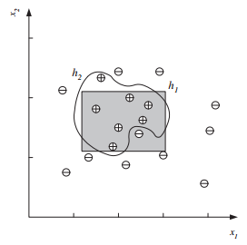

Headline: [10]Introduction to Machine Learning: (chapter two[3])
Supervised Learning: Noise (第二章[3])
声明: 本篇博文为本人阅读机器学习导论的读书笔记
为什么选择英文版？Why am i rewrite?
由于本人惨不忍睹的英语，于是首先选择了中文版，可是，昨天突发奇想，反正机器学习也是不会，英语也是不会，不如省事一点一起学，于是，我选择了英文版
注: 前面章节出现的词汇不会重复解释，完成本书词汇表，本书完结时提供
Supervised Learning
Noise
Noise is any unwanted anomaly in the data and due to noise, the class
may be more difficult to learn and zero error may be infeasible with a
simple hypothesis class (see figure 2.8). There are several interpretations
of noise:
Figure 2.8

Figure 2.8 When there is noise, there is not a simple boundary between the positive and negative instances, and zero misclassification error may not be possible with a simple hypothesis.
A rectangle is a simple hypothesis with four parameters defining the corners. An arbitrary closed form can be drawn by piecewise functions with a larger number of control points.
There may be imprecision in recording the input attributes, which may shift the data points in the input space.
There may be errors in labeling the data points, which may relabel positive instances as negative and vice versa. This is sometimes called teacher noise.
There may be additional attributes, which we have not taken into account, that affect the label of an instance. Such attributes may be hidden or latent in that they may be unobservable. The effect of these neglected attributes is thus modeled as a random component and is included in “noise.”
As can be seen in figure 2.8, when there is noise, there is not a simple boundary between the positive and negative instances and to separate them, one needs a complicated hypothesis that corresponds to a hypothesis class with larger capacity. A rectangle can be defined by four numbers, but to define a more complicated shape one needs a more complex model with a much larger number of parameters. With a complex model, one can make a perfect fit to the data and attain zero error; see the wiggly shape in figure 2.8. Another possibility is to keep the model simple and allow some error; see the rectangle in figure 2.8.
Using the simple rectangle (unless its training error is much bigger)
makes more sense because of the following:
It is a simple model to use. It is easy to check whether a point is inside or outside a rectangle and we can easily check, for a future data instance, whether it is a positive or a negative instance.
It is a simple model to train and has fewer parameters. It is easier to find the corner values of a rectangle than the control points of an arbitrary shape. With a small training set when the training instances differ a little bit, we expect the simpler model to change less than a complex model: A simple model is thus said to have less variance. On the other hand, a too simple model assumes more, is more rigid, and may fail if indeed the underlying class is not that simple: A simpler model has more bias. Finding the optimal model corresponds to minimizing both the bias and the variance.
It is a simple model to explain. A rectangle simply corresponds to defining intervals on the two attributes. By learning a simple model, we can extract information from the raw data given in the training set.
If indeed there is mislabeling or noise in input and the actual class is really a simple model like the rectangle, then the simple rectangle, because it has less variance and is less affected by single instances, will be a better discriminator than the wiggly shape, although the simple one may make slightly more errors on the training set. Given comparable empirical error, we say that a simple (but not too simple) model would generalize better than a complex model. This principle Occam’s razor is known as Occam’s razor, which states that simpler explanations are more plausible and any unnecessary complexity should be shaved off.
好了，今天的分享就到这里，我们明天继续。谢谢大家。
COMMENTS